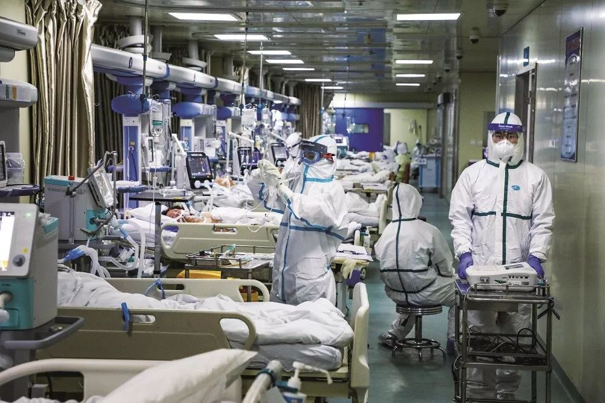
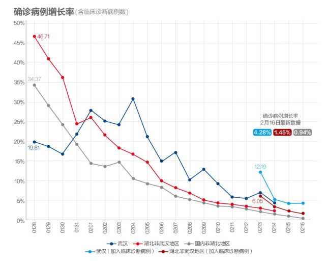
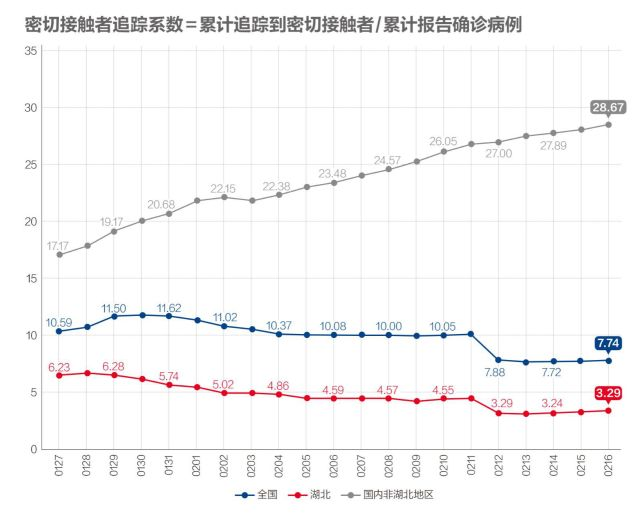

数说疫情0216：湖北化解堰塞湖战局扭转，非湖北地区新增病例5日内清零
原文链接 备份链接 文 | 《财经》数据研究员 徐进 图 |《财经》视觉中心 编辑 | 谢丽容 1. 全国累计确诊病例趋势 截至2月15日24:00，全国累计报告确诊新冠肺炎病例68500人。以下分地区情况。 图1 有朋友提醒小编：你不 …

我们为什么预测本月20日前每日新增病例归零？五个依据

2020年2月6日，武汉市蔡甸区人民医院的隔离病房。摄影/陈卓
文 |《财经》数据研究员 徐进
图 |《财经》视觉中心
编辑 | 谢丽容
截至2月16日24:00，全国累计报告确诊新冠肺炎病例70548例。以下为分区趋势图。

图1
国内非湖北地区见顶态势明显，湖北非武汉地区在变更口径导致数据上跳之后亦迅速趋向平缓。

图2
国内非湖北新增病例下降至接近100例，省均已不到4例。我们继续坚持预测：本月20日前每日新增病例归零。有很多网友担心这样的预测是否过于乐观，也有很多网友希望了解预测主要依据。下面说说我们的预测方法和依据：
1) 我们首先对柱状图左侧的数据不断进行分段拟合，同时我们也参照指数函数Y=r^X;Y

示意图1
2) 我们参照北京2003年SARS每日新增病例分布图（见示意图2），并没有出现很多人担心的大长尾。

示意图2
3) 直接撤走母体，增殖模型失灵，峰值右侧尤其如此。峰值的出现意味着追踪、隔离、防护等防控措施很好地到位了。增值来自母体，有人认为新增病例一定与已感染人数有关，那么大量级的母体在那里，增量怎么可能很快归零呢？其实隔离就意味着直接撤走“母体”，让它不再发生本可能继续发生的传染。同理，追踪密切接触者则是提前撤走潜在的“母本”。追踪到位了，母本近乎归零了。就传染意义而言，母本被不断归零，新增人数也会迅速归零。
4) 很多人认为这次新冠肺炎的传染力远远大于SARS，疫情期也一定会更长。殊不知事有两面，正因为传染力强，疫情起势更为凶猛，结果导致了，更早的全国性紧急动员应对。回想一下，两次肺炎起病时间大体相同，但2003年的此时，人们对疫情还普遍没有知觉，2月下旬北京召开了两会，3月上旬全国两会召开，3月下旬北京才有最初的预警。而这次的新冠肺炎疫情，我们现在已经全民动员、全民防控已经跨过了每日新增量的峰值10多天了。
5) 还有人担心返工潮。我们可以看到各人口流入城市严阵以待，所谓“返工潮”已然被分散。更重要的是，所有返工人员都来自已经实现有效追踪、隔离、排查的非湖北地区，已相对安全。

图3
湖北非武汉地区在回归数据调整前下降轨迹基础上继续下降。态势坚定，显示防控措施全面到位。

图4
武汉数据再现波动。为武汉人民捏把汗。

图5
国内非湖北地区增速降至1%以内，有望率先归零！湖北非武汉地区的病例增速降至1.45%。也可以预测归零时间了。武汉反复。

图6
湖北虽只是微弱回升，却能表现出其对密切接触者追踪力度的提高，这是整体防控体系的一个关键环节。我们一直期待湖北这一指数上升，今天的数据坚定了这一走势。点赞！可惜我们至今没有武汉的数据。国内非湖北地区的追踪力度仍在不断加大。

图7
湖北尚在接受医学观察者存量数据出现继续下降，表明湖北非武汉地区疫情明确趋缓。国内非湖北地区继续下降降幅加大。

图8
湖北和国内非湖北地区继续双双明显下降！

图9
湖北待查疑似病例稳中趋降。国内非湖北地区较快下降。

图10
湖北在院治疗人数仍有较大上升，交叉印证可推定主要是武汉大力提升收治能力所致。国内非湖北地区减幅加大。
图11
每日新增治愈国内非湖北地区回落，湖北非武汉地区、武汉上升。

图12
湖北非武汉地区越过“黄金交叉”后继续扩大战果，每日释放出更多高度紧缺的医疗资源。

图13
病死率缓慢提升，总体态势正常。疫情暴发初期，每日新增病例猛增，有可能快过死亡人数增长，因而导致病死率下降。经过一段时间滞后，随病程进展，会带来死亡人数增加较快；与此同时，随着疫情得到控制，每日新增确诊病例出现明显下降，累计确诊病例增速放缓。这一快（分子），一慢（分母），会导致病死率缓慢回升。只有在疫情基本结束时，这个数值才会逼近“最终病死率”。
小结：湖北以外省份日益接近达到新增病例归零、累计量见顶。湖北非武汉地区新增病例也比预计更早地进入快速收敛区。武汉显现平稳后再次出现波动。有待观察。

▲点击图片查看更多疫情报道
责编 | 蒋丽 lijiang@caijing.com.cn
本文为《财经》杂志原创文章，未经授权不得转载或建立镜像。如需转载，请在文末留言申请并获取授权。
原文链接 备份链接 文 | 《财经》数据研究员 徐进 图 |《财经》视觉中心 编辑 | 谢丽容 1. 全国累计确诊病例趋势 截至2月15日24:00，全国累计报告确诊新冠肺炎病例68500人。以下分地区情况。 图1 有朋友提醒小编：你不 …
原文链接 备份链接 文 |《财经》数据研究员 徐进 图 |《财经》视觉中心 编辑 | 谢丽容 1. 今日概况： 根据国家卫健委数据，2月11日0—24时，31个省（自治区、直辖市）和新疆生产建设兵团报告，新增确诊病例2015例（湖 …
原文链接 备份链接 _ 今起武汉全市范围对居民小区实施封闭管理。小编身在武汉，响应号召，更要在家安心分析数据。武汉挺住！ _ 文 |《财经》数据研究员 徐进 图 | 视觉中心总监 黎立 编辑 | 谢丽容 1. 今日概况 2月10 …
原文链接 备份链接 文 |《财经》数据研究员 徐进 图 |《财经》视觉中心 编辑 | 谢丽容 1. 全国累计新增确诊病例 图1 由图可见，国内非湖北地区正趋于平缓。 2. 新增病例：国内非湖北地区继续坚定下降，有望近日归零 图2 国内 …
原文链接 备份链接 图/法新 文 |《财经》数据研究员 徐进 图 | 视觉中心总监 黎立 编辑 | 谢丽容 1. 今日概况： 2月9日0—24时，31个省（自治区、直辖市）和新疆生产建设兵团报告，新增确诊病例3062例（湖北2618 …